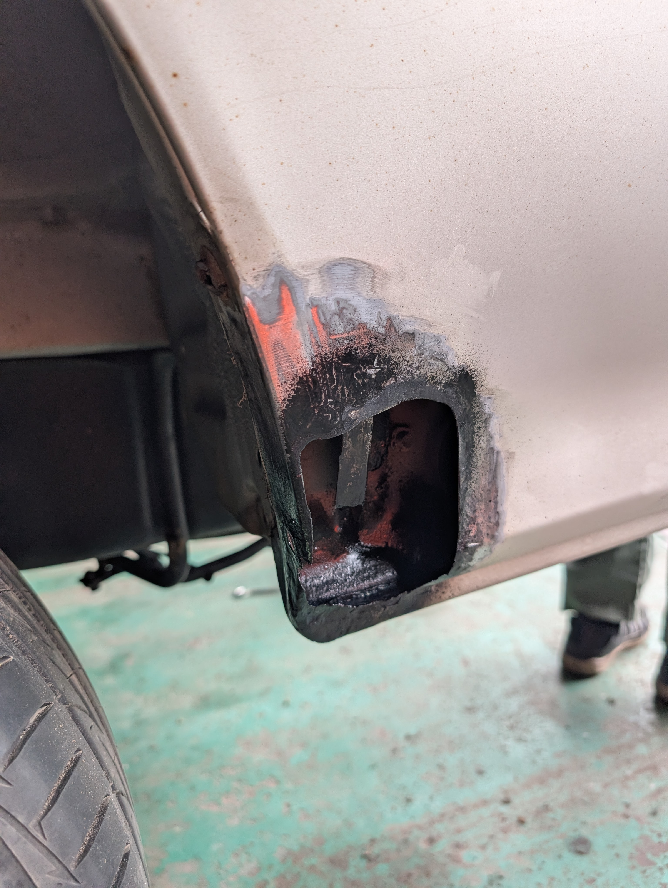
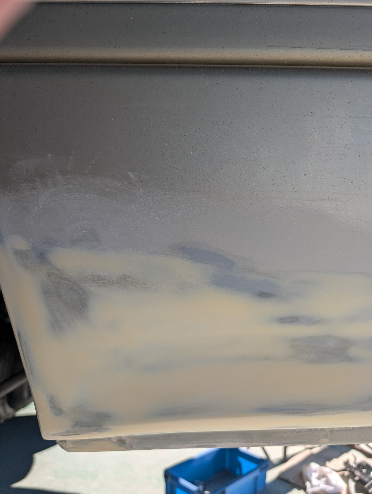
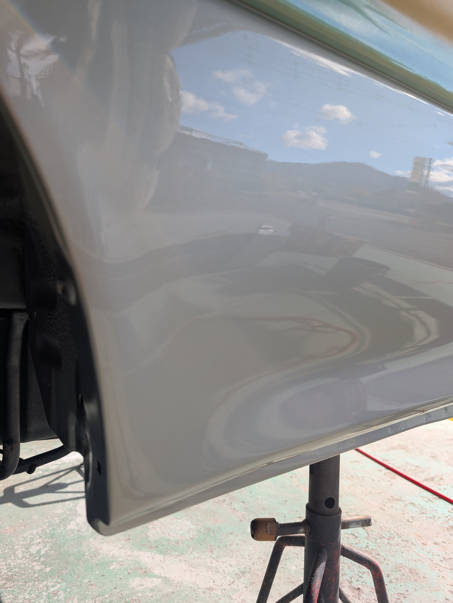

車のサビによる穴あき補修・板金塗装
症状
ボディ下部にサビが発生し、腐食が進行して穴が開いている状態。 表面だけでなく、周辺部分にも腐食が広がっていました。
修理前の状態
サビによってボディの一部が欠損。 腐食部分の状態を確認し、補修作業を行います。

修理内容
腐食部分の補修を行い、金属板を使用して穴を塞ぎました。 その後、パテによる成形と研磨を行い、表面を整えていきます。

下地を整えた後、塗装作業を行いました。 周囲との仕上がりを確認しながら作業を進めています。
修理後の確認
補修部分の表面を整え、塗装まで完了しました。 サビによる穴が開いていた部分も、きれいに仕上がりました。
